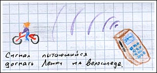
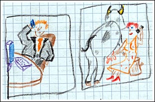

Наглость вторая натура. Сигнал телефона. В платье на картошке. Отьезд. Пасьянс на компютере.
В Ригу я собирался возвратиться вечером второго дня. И покупка билета на этот рейс ошарашила Ленку, которая уже привыкла, что мои двухдневные приезды растягиваются на неделю. Она в этот день планировала поездку на велосипедах, в надежде на то, что со мной пообщаться она ещё успеет. А я вот так вот. Тот ещё чижик.
На самом деле я тогда был очень рад, что Ленка уехала кататься. потому как ещё Ворон провожая меня, стыдил, мол свалишся людям на голову посреди рабочей недели. Ну я и действительно свалился на Ленку и её семью. Нет, я конечно же понимаю, что это те люди, которые всегда рады. Но ведь есть ещё такая штука как собственная совесть, нежелание навязываться и прочее.
В общем, тот факт что Ленка уехала без меня, немного меня успокоил на тот предмет, что я не становлюсь для всех обузой в своих приездах.
А причины беспокойства на этот предмет — весьма весомые. Начать с того, что меня всегда готовы приютить по приезду, и закончить тем фактом, что я могу приехать в чужой город без денег на пол недели (это гнусный факт с моей стороны, но такой случай был). О том, что меня в день кормят столько, сколько я в Риге за неделю не съедаю — об этом я уже молчу. Привык. О том, насколько вкусно меня кормят — об этом я тоже молчу. Не смогу описать своим некулинарным словарным запасом.
В общем, чтобы вы представили ситуацию: наглый липа регулярно призжает в гости к хорошим, к очень хорошим людям. Несмотря на свою наглость, липа кланяется этим людям до пола, за их заботу. Вот.
Вечером в день отъезда я вдруг понял, что моя поездка удалась.
Из дорожного дневника:
Я лежу на диване в полной тишине. Голова немного болит и скоро выходить в город. А я лежу довольный поездкой, думаю ни о чём, и настукиваю камешками йестудэй…
Потом мы с Юлькой пошли в бар путешественников. Во-первых, он находится в пяти минутах от автовокзала, во-вторых, надо порадовать кружечкой-другой пива свой мочевой пузырь перед поездкой (иначе просто скучаешь все пять часов в дороге). А в третьих — это очень хороший бар. Хотели о месте нашей дислокации сообщить Ленке, но мой телефон только и мог что написать на экране надпись «соединяется...». Юлькин телефон тоже говорил, что Ленка вне зоны.
Мы тогда представили себе картину, как Ленка на всей скорости несётся по шоссе на велосипеде, а мобильный сигнал летит за ней, силится, тужится... но догнать всё никак не получается.

В этом баре с Юлькой, помимо прочих надуманных идей, придумали очередную фото-задумку (кодового названия к ней пока нет).
Представте, что каждая результативная фотография данного проекта состоит из двух: фотография мужчины и женщины. Оба они одеты в модные одежды, стильные причёски и все понты. В общем вылитые персонажи сериала «Секс и город». Он и она разговаривают по мобильному телефону — и ясное дело, что разговаривают друг с другом. Но!
Но, если Он находится в своей обычной обстановке (офис, престижное кафе, спортзал...), то Она находится в деревне — доит корову, копает картошку, сажает морковь...

Ленка, когда услышала идею проекта, сразу сказала, что картошку она копать не будет.
Вот как бы и вся поездка. Потихоньку допили пиво, по дороге на автовокзал встретили наших велосипедистов. Сразу после этого решили устроить моё символическое доезжание до вокзала на велосипеде. Чтобы штатив Ворона хоть чем то оказался полезным мне в этой поездке — сфотографировались все вместе у автобуса.
Из дорожного дневника:
Закат в Таллинне. Вместе с Ленкой, Юлькой и Димкой, меня провожают бирюзовые облака над морем. Десятая поездка в Таллинн…
И десятый раз я остался не просто доволен, я просто счастлив, что поехал. Ленка, её семья, Юлька, Димка, его друзья, Александра… Мне везёт? Или в этом городе все? Или этот город всё?
А на границе, кто-то сидя в маленькой будочке на кпп, рубил на компьютере в солитер.